Настройка клиентов локальной сети
Введение
После того как созданы общие папки, пользователи, группы и настроены
права доступа пользователей и групп к общим папкам, необходимо
настроить клиентов. Нужно определиться, с каких компьютеров каждый
пользователь должен подключаться к серверу и сделать так, чтобы
пользователи на этих компьютерах могли входить в свои компьютеры от
имени этих учетных записей.
Для этого компьютеры пользователей должны иметь доступ к базе данных
учетных записей. В этой базе данных должны быть учетные записи, от
имени которых они будут подключаться к серверу.
Как описано в разделе "
Немного теории", существует два способа организовать такую базу данных.
Первый способ: завести учетные записи, совпадающие по имени и паролю на
компьютере клиента. После этого пользователь должен будет при загрузке
компьютера входить в него от имени одной из этих учетных записей. После
входа, при попытке подключиться к серверу в Сетевом окружении, имя
пользователя и пароль будут передаваться на сервер и сравниваться с
учетными записями, заведенными на сервере. При совпадении, пользователь
получит доступ к серверу и к его общим ресурсам в соответствии с
правами, определенными для его учетной записи.
Если пользователь входит в свой компьютер от имени учетной записи,
которая есть в локальной базе данных его компьютера, но нет в базе
данных учетных записей сервера, то подключение к серверу автоматически
будет производиться от имени учетной записи guest , заведенной на
сервере и пользователь получит права доступа к общим папкам,
назначенным для этой учетной записи.
Второй способ: не заводить учетные записи в локальной базе данных
компьютера клиента и не использовать локальную базу данных
пользователей при входе в компьютер, а использовать вместо нее базу
данных учетных записей, заведенных на сервере. Автоматически настроить
такую систему нельзя, сервер не позволяет всем компьютерам пользоваться
своей базой данных, потому что это не безопасно. Сервер позволяет
использовать свою базу данных только компьютерам, которые входят в
домен, контроллером которого этот сервер является. Для этого нужно
указать серверу, чтобы он выполнял роль контроллера домена. Затем,
чтобы компьютер мог стать членом домена, он должен пройти регистрацию
на сервере и учетная запись его компьютера должна быть записана в базу
данных учетных записей компьютеров домена, которую хранит контроллер.
Для успешной регистрации компьютера необходимо ввести имя и пароль
пользователя, который имеет право добавлять компьютеры в домен. По
умолчанию, право на это имеют пользователи root и sysadmin. Можно
наделить этим правом любого другого пользователя, предоставив ему
привилегию "Может добавлять машины к этому контроллеру домена".
После регистрации компьютера в домене и после перезагрузки,
пользователь должен будет входить в свой компьютер от имени одной из
учетных записей, заведенных на сервере, которые в данном случае
являются общими для всех компьютеров и называются учетными записями
пользователей домена. Соответственно, при подключении к серверу будет
использоваться имя пользователя и пароль, которые он ввел при входе в
свой компьютер и ему будут предоставлены права доступа к общим папкам,
настроенные для этой учетной записи на сервере.
Подключение клиентов к серверу, не являющемуся контроллером домена
Рассмотрим на примере, как настроить клиентов для подключения к серверу, который не является контроллером домена.
Предположим что имеется небольшая сеть:
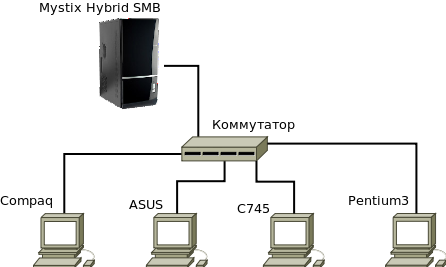
Есть четыре пользователя: администратор, два бухгалтера и директор,
работающие соответственно за различными компьютерами. Необходимо
настроить эти компьютеры для доступа к серверу. Для этого на сервере
предварительно заведены учетные записи пользователей:
- guest
- sysadmin - администратор
- buh1 - первый бухгалтер
- buh2 - второй бухгалтер
- director - директор
Они все помещены в группу smbusers. Также настроены права доступа к
общим папкам сервера для этих пользователей. Необходимо обеспечить
доступ пользователей со своих компьютеров к серверу, к его общим
папкам в соответствии со следующей ситуацией:
- Директор работает только за компьютером Compaq
- Бухгалтера работают за компьютерами ASUS и C745 и каждый
бухгалтер должен иметь возможность подключаться к серверу с любого из
этих компьютеров
- Администратор работает за компьютером Pentium3, но должен иметь возможность подключаться к серверу с любого компьютера
Мы рассматриваем случай когда сервер не является контроллером домена. В
этом случае каждый компьютер при подключении использует свою локальную
базу данных пользователей. Поэтому нужно на каждом компьютере создать
учетные записи для каждого пользователя, который может за ним работать
и подключаться к серверу. Следовательно нужно:
- На компьютере Compaq завести пользователей director и sysadmin с такими же паролями как на сервере
- На компьютере ASUS завести пользователей buh1, buh2 и sysadmin c такими же паролями как на сервере
- На компьютере C745 завести пользователей buh1, buh2 и sysadmin с такими же паролями как на сервере
- На компьютере Pentium3 завести пользователя sysadmin с таким же паролем как на сервере
Эти действия выполняются стандартными средствами Windows. Мы рассмотрим
процесс создания учетной записи пользователя buh1 в операционной
системе Windows XP Professional. Мы покажем как завести минимальную
учетную запись, не заполняя всех данных (ведь для подключения к серверу
нужны только имя и пароль. Даже то, в какой группе находится учетная
запись пользователя на клиенте не имеет значения). Мы покажем лишь один
из способов, их существует несколько.
Создание учетной записи пользователя на клиенте
1. Выполните команду Пуск --> Панель управления из меню
2. Войдите в раздел "Администрирование" панели управления
3. Войдите в "Управление компьютером"
4. Разверните раздел "Локальные пользователи и группы"
5. Щелкните левой кнопкой по папке "Пользователи". Справа будет отображена
локальная база данных учетных записей пользователей этого компьютера
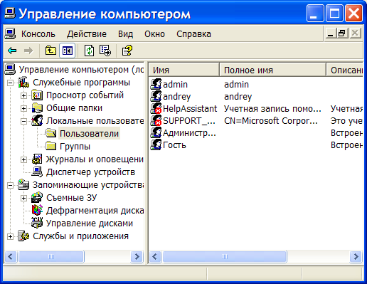
6. Выполните команду "Действия" -> "Новый пользователь" из меню. Появится окно ввода данных нового пользователя.
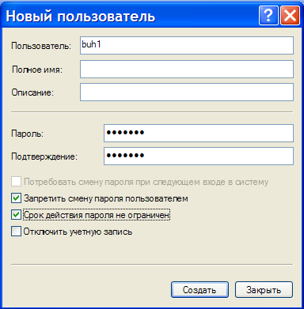
7. Необходимо заполнить поля "Пользователь", "Пароль" и "Подтверждение"
пароля. Пароль должен совпадать с паролем, заведенным для этой учетной
записи на сервере. Также желательно выставить флажки так, как показано на рисунке выше.
8. Нажмите кнопку "Создать". Будет добавлен новый пользователь.
После перезагрузки можно входить в компьютер от имени этой учетной
записи и подключение к серверу будет производиться с правами учетной
записи buh1 на сервере.
Таким же точно образом заведите учетные записи для всех остальных
пользователей на всех компьютерах, которые будут подключаться к серверу.
Организация домена
Первый способ отлично работает, в частности в небольших сетях. Однако у
него есть большой недостаток: при изменении параметров учетной записи
на сервере (например имени пользователя и пароля), их нужно изменять
вручную на всех компьютерах, на которых эта учетная запись заведена.
Особенно это становится проблемно в больших сетях, с большим
количеством пользователей и компьютеров. Эта проблема решается вторым
способом.
Второй способ требует введение сервера и всех компьютеров в домен.
Сервер вводится в домен в качестве контроллера домена, а компьютеры в
качестве членов домена.
Если все компьютеры, включая сервер, будут в домене, они будут
пользоваться единой базой данных учетных записей пользователей, которая
расположена на контроллере домена. На компьютерах клиентов не нужно
будет заводить учетные записи, нужно лишь ввести эти компьютеры в
домен. Ввести компьютеры в домен можно только после того как в сети
появится контроллер домена. Именно он отвечает за регистрацию
компьютеров в домене. В качестве контроллера домена будет выступать сам
файловый сервер.
Создание контроллера домена
Для создания контроллера домена нужно установить флажок "
Является
контроллером домена" в свойствах файлового сервера. (см. раздел
"
Параметры файлового сервера").
После нажатия на кнопку OK, данный сервер станет контроллером домена. В
качестве имени домена используется имя рабочей группы. В данном случае
этим действием создается домен MYDOMAIN.RU с контроллером, размещенным на
файловом сервере. Все учетные записи пользователей и групп сервера
становятся учетными записями домена.
Учетные записи пользователей домена
Прежде чем перейти к регистрации членов домена следует понять, что из
себя физически представляет учетная запись пользователя и в частности,
что из себя представляет учетная запись пользователя домена.
Учетная запись пользователя содержит в себе все параметры, связанные с
пользователем. Это его имя, пароль, домашняя папка и
все остальные параметры, которые вводятся на различных закладках окна
параметров пользователя (см. "
Управление пользователями и группами").
Также, учетная запись пользователя
Windows включает в себя профиль. Физически, профиль, это папка на
диске, в которой записано содержимое рабочего стола пользователя,
настройки
рабочего стола и другие персональные настройки данного пользователя.
Для локальных учетных записей, созданных на компьютерах клиентов, для
хранения профиля создается папка в каталоге C:\Documents and Settings.
Папка имеет такое же имя, как и имя пользователя. Каждый раз при входе
в компьютер, система загружает профиль пользователя и в соответствии с
ним формирует среду его работы. Профили для локальных учетных записей
называются локальными.
Для учетных записей домена, для хранения профиля создается каталог на
сервере. По умолчанию этот каталог находится в домашней папке
пользователя сервера, в папке winprofile. Это можно переопределить на
закладке "Дополнительно" в окне параметров пользователя (см.
"
Управление пользователями и группами"). Профили учетных записей
пользователей домена называются перемещаемыми. Когда пользователь
входит в компьютер от имени учетной записи домена, его профиль берется
с сервера и копируется на этот компьютер. Во время работы, пользователь
может изменять свое окружение: добавлять ярлыки на рабочий стол,
создавать файлы в папке "Мои документы". При завершении работы (при
правильном завершении работы), измененный профиль копируется с
локального компьютера обратно на сервер (это одна из причин, по которой
нужно завершать работу правильно в сети с доменной архитектурой).
Благодаря перемещаемым профилям пользователь может входить под своим
именем с любого компьютера, являющегося членом домена и видеть свой
рабочий стол и все остальное, что хранится в профиле. Профиль как-бы
следует (перемещается) за пользователем.
После ввода компьютера в домен и при первом подключении от имени
учетной записи домена, которая хранится на сервере, так как изначально
папка winprofile этого пользователя на сервере пуста, создается профиль
по умолчанию, минимальный профиль. Поэтому рабочий стол пользователя
домена будет очень сильно отличаться от того, который был до ввода
компьютера в домен. Очень важно иметь это в виду, прежде чем вводить
компьютер в домен. Если нужно сохранить текущий рабочий стол, то прежде
чем вводить компьютер в домен, нужно выполнить резервное копирование
текущего локального профиля. Эта процедура выполняется утилитой
"Мастер переноса файлов и параметров", которая находится в
меню "Пуск-->Стандартные-->Служебные". Эта операция
сохранит копию текущего профиля. Затем, с помощью этой же процедуры
можно загрузить сохраненный профиль в учетную запись на сервере, после того как компьютер будет
введен в домен.
Вооружившись этими знаниями приступим к введению компьютеров в домен.
Введение компьютера в домен
Чтобы ввести компьютер в домен нужно:
1. Нажать правой кнопкой мыши по значку "Мой компьютер" на рабочем
столе и выполнить команду "Свойства" из контекстного меню. Появится
окно свойств компьютера.
2. Перейти на закладку "Имя компьютера"
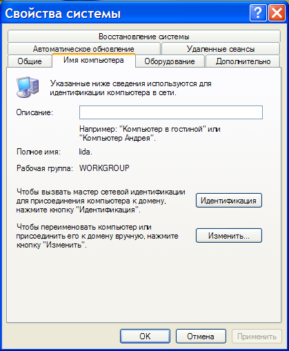
3. Нажать кнопку "Идентификация". Появится мастер идентификации компьютера в сети.
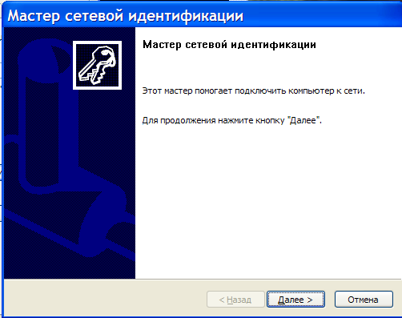
4. Нажать кнопку "Далее". Указать что компьютер входит в сеть
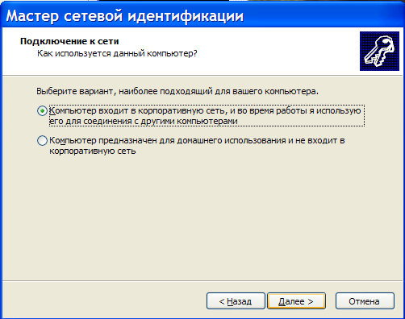
и нажать "Далее".
5. Указать что компьютер входит в сеть с доменами
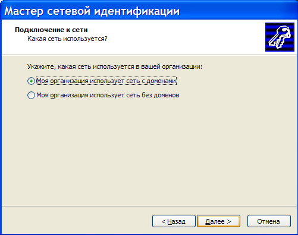
и нажать "Далее"
6. Собрать информацию, которая необходима для ввода компьютера в домен.
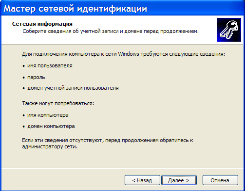
и нажать "Далее"
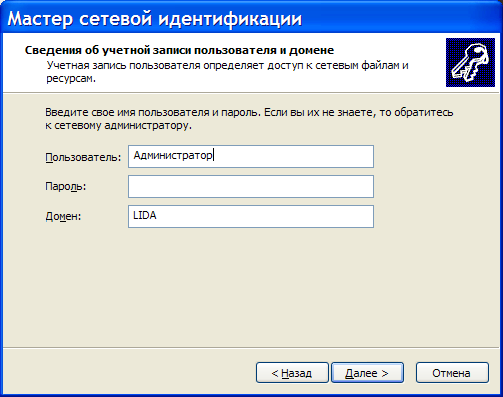
7. Ввести имя учетной записи в домене, от имени которой пользователь
будет в первую очередь входить в этот компьютер. Указывается имя
учетной записи на сервере, пароль этой учетной записи и домен, в котором она находится.
Для прошлого примера это будет пользователь buh1, а домен будет называтья ASU.
После ввода данных нужно нажать кнопку "Далее".
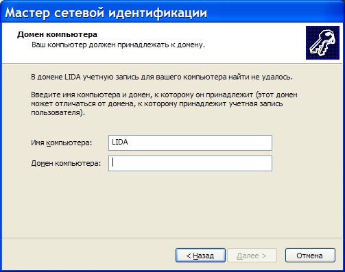
8. Далее нужно указать имя компьютера и имя домена, к которому этот
компьютер будет подключаться. Имя компьютера можно оставить таким,
какое есть, в качестве домена указывается домен, в который вводится
компьютер.
После ввода имени домена нужно нажать "Далее".
9. Появится окно для указания параметров пользователя, который имеет право вводить компьютер в домен.
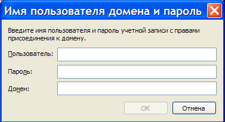
После ввода данных нужно нажать "Далее".
Вводится пользователь, его пароль и
домен. Изначально вводить
компьютеры в домен могут пользователи root и sysadmin. На это также
имеет право любой пользователь, которому предоставлена привилегия
"Может добавлять машины к этому контроллеру домена". Далее нужно нажать
OK.
При успешном вводе параметров, компьютер будет зарегистрирован в
домене. При регистрации компьютера, на контроллере домена создается
учетная запись этого компьютера. Это почти то же самое, что и учетная
запись пользователя, в качестве имени используется имя компьютера со
знаком $ в конце. Также для этой учетной записи формируется
произвольный пароль, который никогда никому не сообщается, но при этом
он сохраняется как на сервере, так и на самом клиенте.
Эта учетная запись используется каждый раз при загрузке компьютера для
того чтобы получить доступ к базе данных учетных записей сервера.
Компьютер, являющийся членом домена при загрузке пытается подключиться
к контроллеру домена от имени этой учетной записи и только в случае
успеха ему предоставляется доступ к базе данных учетных записей
пользователей домена и разрешается использовать их для обслуживания
подключения пользователя к своему компьютеру.
10. На данном этапе компьютер считается зарегистрированным в домене, но мастер предложит дополнительный шаг.
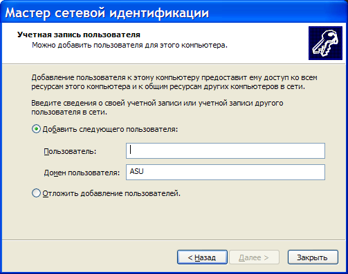
Он предлагает добавить учетную запись пользователя домена, от имени
которой пользователь будет подключаться к домену в базу данных
локальных учетных записей. Для чего это может быть нужно ?
Это может быть нужно для того, чтобы пользователь домена имел права
локального администратора этого компьютера. Если не сделать
пользователя домена локальным администратором, то пользователь не
сможет производить различные административные действия со своим
компьютером, например устанавливать и удалять программы.
Укажите имя добавляемого пользователя и нажмите "Далее"
11. Укажите, в какую группу нужно добавить этого пользователя
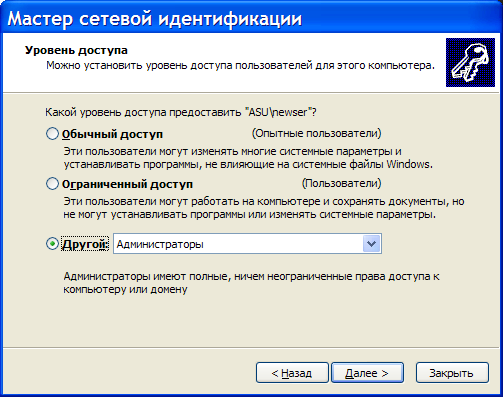
Например, чтобы пользователь домена являлся администратором локального компьютера, его нужно поместить в группу "Администраторы"
После выбора группы нажмите "Далее"
12. Появится последнее окно мастера, в котором нужно нажать кнопку "Готово".
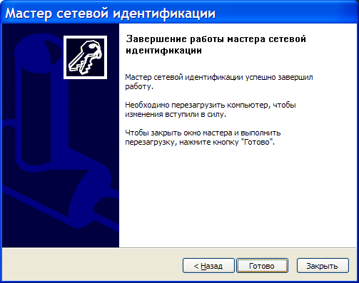
После перезагрузки вы сможете войти в компьютер от имени учетной записи
домена и взаимодействовать с сервером от ее имени. Если эта учетная
запись была добавлена в качестве локального администратора, то с ее
помощью можно выполнять административные действия с компьютером,
как-будто это пользователь "Администратор".
Подобным образом в домен
вводятся и клиенты Windows 7. Однако иногда
возникают проблемы при подключении
компьютера к домену с помощью этой
стандартной процедуры. Проблемы бывают
разнообразные, их сложно включить в
стандартное описание. На сервере, в
общей папке utils есть каталог troubleshooting,
в котором есть файлы, описывающие
особенности подключения различных
клиентов к контроллеру домена. Этот
каталог мы обновляем значительно чаще
чем данное руководство пользователя, мы добавляем в него актуальную информацию и удаляем устаревшую.
Если у вас не получилось выполнить
процедуру, описанную выше, или если
после ее успешного выполнения вы не
можете войти в домен, попробуйте поискать
в этом каталоге информацию об особенностях
подключения вашего клиента и после
выполнения приведенных рекомендаций,
попробуйте пройти этап, который не
получился еще раз.
Дополнительные возможности домена
Мы не претендуем и даже не пытаемся претендовать на полноту описания
доменов Windows, их возможностей и тонкостей настройки. Об этом
написано огромное количество книг, которые доступны как в бумажном
виде, так и онлайн. В этом руководстве описан базовый минимум, который
должен быть выполнен для организации домена с использованием Mystix
Hybrid SMB в качестве контроллера. Нашей задачей является обеспечение
доступа к файловому серверу от имени учетных записей домена. Однако
домен позволяет значительно больше и мы здесь кратко
рассмотрим эти возможности.
Как ранее говорилось, при организации домена, все компьютеры и серверы,
являющиеся его членами, используют единую базу данных учетных записей
пользователей. Это говорит о том, что пользователь, подключившись с
помощью учетной записи домена, может подключаться от ее имени не только
к серверу, но и к любому другому компьютеру, который является членом
домена. Каждый компьютер может настраивать права доступа к своим общим
папкам, используя базу данных пользователей и групп домена. Благодаря
этому реализуется технология "единого входа". Пользователю достаточно
один раз войти в домен от имени своей учетной записи и он получает
доступ ко всем ресурсам сети, на которые имеет право без необходимости
авторизоваться на каждом сервере или другом компьютере.
При входе в компьютер от имени учетной записи домена, в Сетевом
окружении для пользователя становится доступна его домашняя папка.
Также, домашняя папка автоматически подключается к системе пользователя
в виде сетевого диска (по умолчанию это диск H). Имя диска можно
изменить на закладке "
Дополнительно" параметров учетной записи
пользователя (см. "
Работа с пользователями и группами").
При регистрации сервера в качестве контроллера домена, автоматически
создается общая папка "
netlogon". Она не видна в Сетевом окружении.
Получить доступ к этой папке можно только подключившись удаленно к
рабочему столу сервера (см. "
Подключение к серверу").
Физически она находится в
папке
/var/lib/samba/netlogon
В эту папку можно
помещать скрипты, которые будут выполняться автоматически при входе
пользователя в домен. Скрипт это обычный командный файл DOS, имеющий
имя в формате <имя-пользователя>.cmd. Если в папке netlogon есть
скрипт пользователя, он выполняется на компьютере клиента каждый раз,
когда пользователь входит в домен. Эти скрипты можно использовать для
разных целей: для очистки временных папок на дисках компьютеров, для
резервирования данных пользователя, для записи времени входа
пользователя в домен (чтобы потом, например, знать, вовремя ли он
пришел на работу ;-) .
Вывод компьютера из домена
Для вывода компьютера из домена нужно пользоваться той же процедурой,
что и для ввода его в домен. Только на шаге 5 нужно включить
переключатель "Моя организация использует сеть без доменов". В этом
случае выполняется перевод компьютера из домена в рабочую группу.
Удаление контроллера домена
Чтобы удалить контроллер домена из сети, нужно в окне параметров
файлового сервера выключить флажок "Является контроллером домена" и
нажать кнопку OK.
Желательно до выполнения этой операции вывести все компьютеры из
домена. Иначе оставшиеся в домене компьютеры будут выдавать сообщения
об ошибках при загрузке.